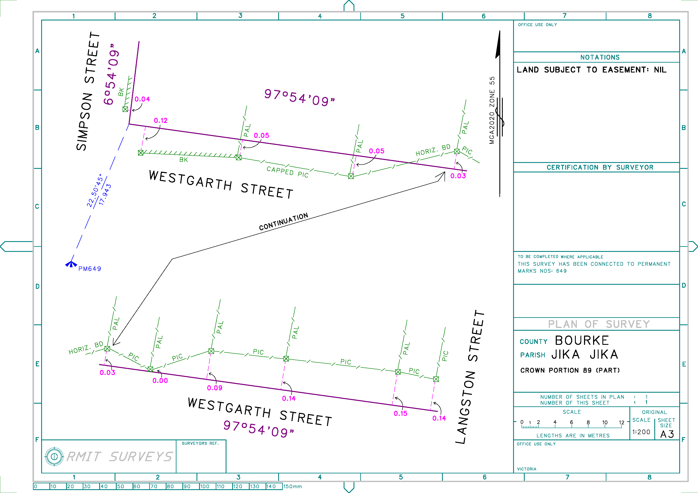

Street Alignment Survey

This was the final submission in a multi-part direct link Street Alignment Reestablishment practical,
from the first semester of my third year. This is a fairly basic map, but it was the first time in a while
that I had done a full survey-style map. As you can see in this map (and many others), I often color-code elements
wherever applicable. Since the map would normally be printed in monochrome, there's no harm in using colors to help
keep things organized, right?
This was also one of the last times I would use LisCAD CAD to put together a map. I had been using it exclusively
for these types of projects up until this point, since we were recommended to. I suppose there is some benefit in learning
to use programs that aren't as user-friendly as is often expected in this day and age.